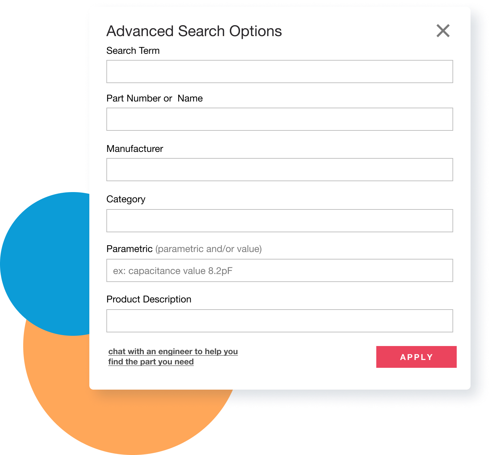

RESEARCH
Part Search and Purchase Flow
The journey an engineer goes through to source parts can be pretty complex but it does usually follow a similar flow. From user interviews we discovered that at the research point, our users typically know the specific category and some constraint of the part they need but since our search performed best when searching part numbers we were losing sessions and possibly conversions due to users not being about to research on arrow.com.
Our goal was to allow users to easily engage with specific categories and parametric before searching for a specific part, in hopes that we would be able to catch the user earlier in the sourcing processes.
TESTING
Engineer Feedback
Our first thought was to expose specific categories that our search algorithm runs through in a text field form and have users manually enter data into each field. Through user test feedback we discovered our users:
- had concerns about entering the content into the correct text field and spelling mistakes
- were confused on the difference between search term and description fields
- were confused by the full page take over and weren’t able to use the browser back button

SOLUTION
Simplifications & Enhancements
From that feedback we removed the description field and changed the visual treatment to a modal. Instead of using text input fields, we created a smart typeahead drop down fields. For example if you selected a category and then proceeded to the manufacturing dropdown, you would only be able to select manufacturer’s from the selected category.